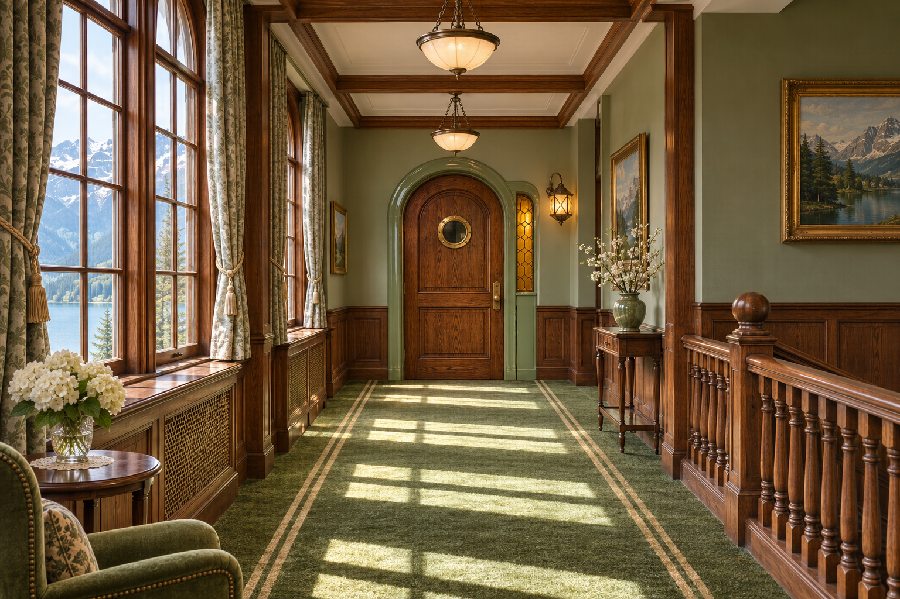
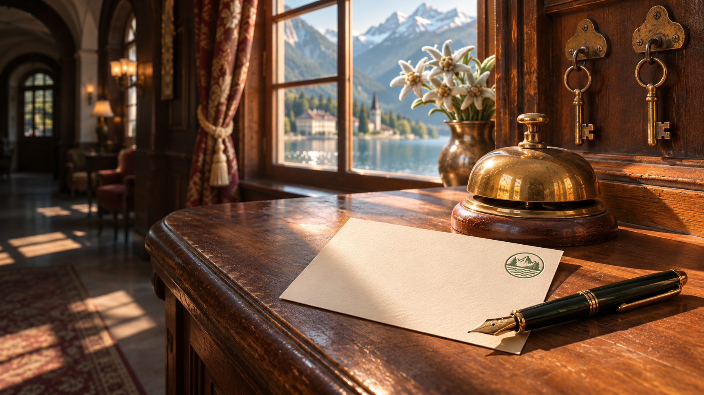

LAKESIDE HOTELStillwater
探索旅馆 ↓Stillwater
House
山的这一侧，湖的尽头。

HOUSE ALBUM
馆藏相册

FROM THE FRONT DESK
关于这些照片
每年闭馆前，我们会从留言簿里挑几张照片，印成明信片。没有留下姓名的，就在背面写上拍摄地点。
馆藏底片西廊 · 原幅
照片背面
拍摄位置：西廊尽头
山的这一侧，湖的尽头。


每年闭馆前，我们会从留言簿里挑几张照片，印成明信片。没有留下姓名的，就在背面写上拍摄地点。
拍摄位置：西廊尽头